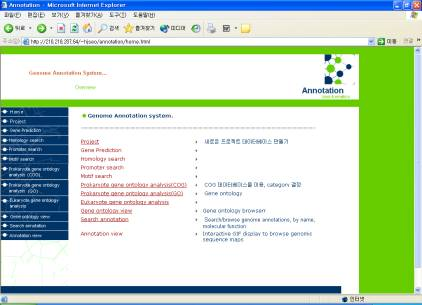

|
Daesang Lee[1],[2], Hwajung Seo1, Hongseok Tae1, Hyeweon Nam1, Kiejung Park1
Keywords: annotation, genome, promoter, motif, ontology, database
1 Introduction
As the genome projects have produced tremendous bioinformatic data, annotation is considered as an essential part of genome sequencing projects to elucidate the value of the sequence[1]. Through annotation systems, molecular biologists could deal with genome data easily and all related information could be accessed, edited, or updated without additional efforts. To satisfy these needs, we have developed a web-based genome annotation system. This system includes the following major modules such as gene prediction, homology search, promoter analysis, motif analysis, gene ontology analysis, annotation databases, and a genome browser which shows the entire information of a genome.
2 Methods
The major data in annotation database covers from contig data to the functional analysis data of the final gene set. The database saves the data obtained from each analysis module and the primary keys indicating the relationship between data. For the users' convenience, the database schemas are different for prokaryote and eukaryote genomes.
Gene prediction in genome project is the first step of annotation. General methods for gene prediction are applied in this system. We implemented and applied the ScanPromW[2] and Dependency-Reflecting Decomposition Model[3] for the prokaryotes and eukaryotes promoter analysis, respectively.
In motif analysis, the Prosite DB patterns are searched for against protein sequences which were generated from the gene prediction. New algorithms are adopted to accomplish fast search for motif patterns of regular expression. The analysis progress/status of promoter and motif search can be monitored through web interface.
For homology analysis of genomic sequence data, we employed the NCBI BLAST tool and used the COGs(Clusters of Orthologous Groups of protein) and GO(Gene Ontology) databases to classify the homology search result[4].
The genome browser module, which searches for the annotation results of an in-progress or finished genome project, visualizes the stored annotation data using the web-based graphical view. It also provides content search and the search results are shown as a list. More detailed information of each gene can be browsed by a further clicking.
3 Results and Discussions
This web-based genome annotation system in the present work has stepwise and intuitive interface as shown in Figure 1. We have tested several experiments with a few microbial genomes and human chromosomes.

Figure 1: Overview of web-based genome annotation system
The system described in this article would be very helpful for genome projects and could accelerate genome researches.
4 References
[1] Kim, K.-B., Seo, H., Nam, H., Tae, H., Kim, P.-G., Lee, D., Jeong, H., and Park, K. 2001. An Integrated Sequence Data Management and Annotation System For Microbial Genome Projects. Intelligence system for Molecular Biology (ISMB 2001).
[2] Lee, D., Park, C., and Park, K. 2002. ScanPromW: A windows program searching for promoter patterns against a genome sequence. Intelligence system for Molecular Biology (ISMB 2002)
[3] Kim, K.-B., and Park, K. 2002. Prediction of Transcrtiption regulatory sites with Dependency-Reflecting Decomposition Model. Intelligence system for Molecular Biology (ISMB 2002)
[4] Seo, H., Kim, K.-B., Tae, H., Park, W., and Park, K. 2002, Development of gene ontology analysis and classification tools for microbial genome annotation. Currents in Computational Molecular Biology (RECOMB 2002) Washington pp.165.
[1] Information and Technology Institute, SmallSoft Co., Ltd. Jeonmin-dong 461-6, Yusung-gu, Daejeon, 305-811, South Korea. E-mail: {dslee, hjseo, hstae, hwnam, kjpark}@smallsoft.co.kr
[2] Dept. of
Biological Science, KAIST, Kusung-dong, Yusung-gu, Daejeon,
305-701, South Korea.
E-mail: dslee@bioneer.kaist.ac.kr